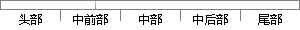

普通用户可以通过在我们的网站上注册获得发布闲置二手物品的权限，同时系统支持查看并修改个人信息、订单管理、浏览商城等功能，普通用户用例图如图3.
片段位置图

相似结果|
1
原句片段：修改个人信息、订单管理、浏览商城等功能，普通用户用例图如图3.
相似片段 1：菜品首页浏览模块、购物车管理模块、用户中心模块...订单,对个人信息的修改以及留言板留言等功能。...(1)帐号信息实体图如图3.4所示。 3.3.3 数据...
|
※ 片段修改建议 ※
近似词参考：- 通过：经由过程
- 我们：咱们
- 获得：取得 得到 获取
- 发布：公布
- 系统：体系
- 支持：撑持 支撑
- 查看：检察
- 修改：点窜
- 订单：定单
- 管理：办理 经管 治理
- 浏览：阅读 欣赏 涉猎
系统自动生成语句：普通用户可以经由过程在咱们的网站上注册取得公布闲置二手物品的权限，同时体系撑持检察并点窜个人信息、定单办理、阅读商城等功能，普通用户用例图如图3.
注：本片段修改建议为系统自动生成，仅供参考。